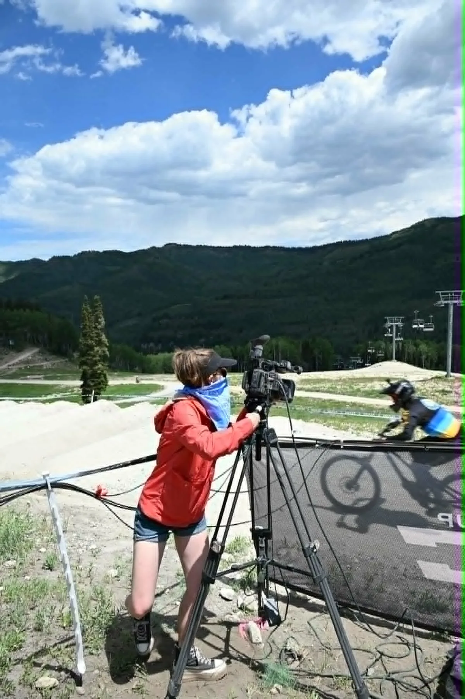

Live production
Multi-camera switching, producing, replay, graphics, commentary, streaming, recording, sponsor integration, and venue delivery.
About Down The Wire
Down The Wire Productions is a Colorado-based live broadcast and event production company built for shows that have to work outside the comfort of a studio.

How we think about production
DTW designs live productions around the audience, venue, event rhythm, sponsor commitments, existing resources, and real technical limitations. That can mean a turnkey multi-camera broadcast, targeted crew support, a field-infrastructure build, replay and graphics, venue screens, or an equipment package engineered around an existing team.
The goal is not to make every production bigger. The goal is to make the system appropriate, understandable, testable, and ready when the event begins.
Our production approach has been shaped by experience supporting major live-broadcast environments, including work connected with ESPN, ABC, CBS, FOX, NBC, Altitude, PAC-12, and Big 12 productions.
Where DTW fits
Multi-camera switching, producing, replay, graphics, commentary, streaming, recording, sponsor integration, and venue delivery.
Fiber, networking, signal transport, power planning, conversion, monitoring, communications, and difficult-site deployment.
Camera, technical direction, engineering, audio, utility, show builds, and equipment packages that can integrate into an existing production.
Experience becomes documentation
The DTW Resources / Field Notes library turns recurring production questions into practical guides on camera planning, budgets, outdoor connectivity, mountain coverage, replay, graphics, and technical scope. It is designed to help organizers make better decisions even before they hire us.
Have an event to solve?
Early planning makes it easier to right-size cameras, crews, connectivity, graphics, venue feeds, and redundancy before expensive choices are locked.